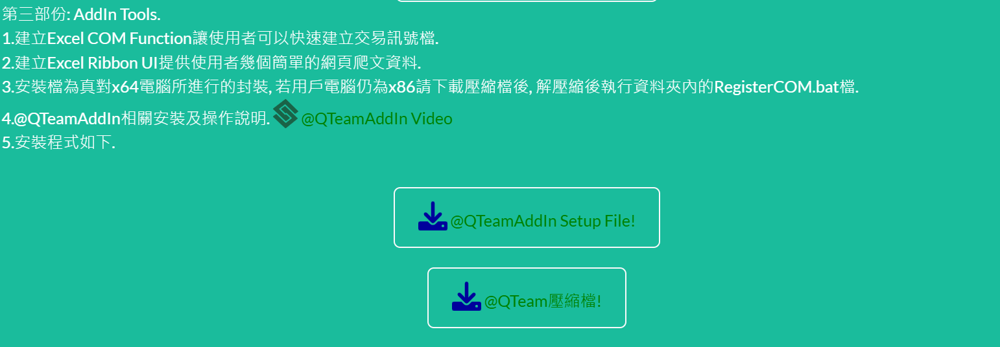
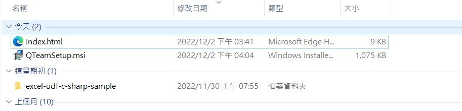
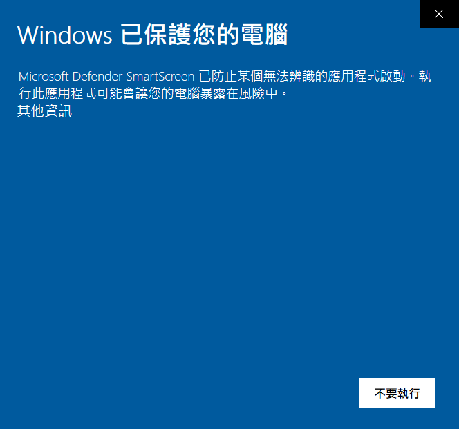
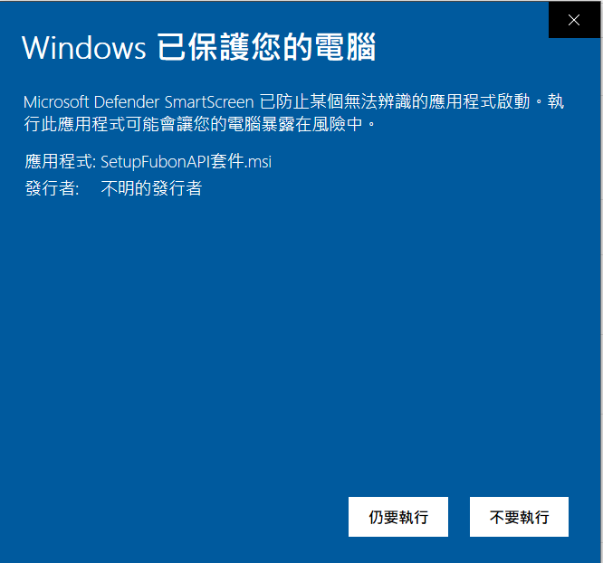
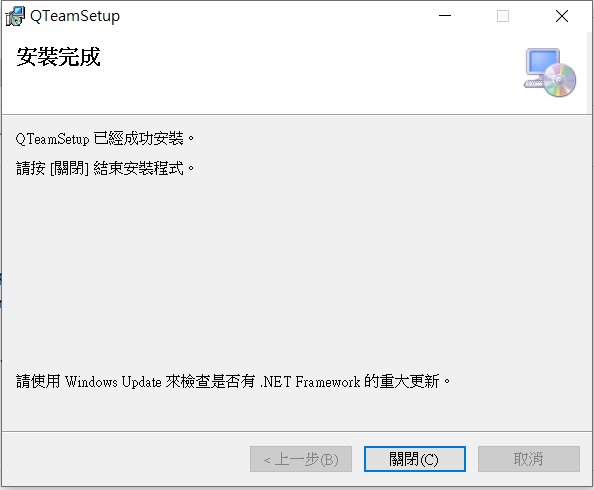

1.QTeamSetup一鍵安裝檔, 建立根目錄於Program Files\QTeam\QTeamSetup\, 且於桌面及開始工具列建立捷徑. (@QTeam壓縮檔, 下載解壓縮後執行RegisterCOM.bat可完成x64_x86不同作業系統的COM註冊.)
下載
點擊
其它資訊
仍要執行, 因需管理者權限, 故會跳至管理者安裝畫面按下"是"
關閉

2.安裝後會直接將COM元件註冊, 開啟Excel即可見已註冊的COM元件, 元件由兩部份組成一為可視化UI, 另一個為Functions可協助用戶建立訊號.
3.UI的部份, 目前僅提供少數(主要的原因是後端未建立資料庫)幾個網路抓取相關資料的選項.
根目錄

Strategy根目錄

4.Functions部份, 主要是協助使用Excel用戶方便建立訊號檔提供給FubonAPI套件進行交易.